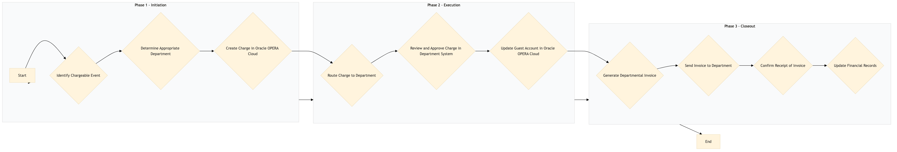

| Role | Steps |
|---|---|
| Front Desk Agent | 1.1 1.3 |
| Revenue Manager | 1.2 2.1 |
| Department Manager (e.g., Spa Manager, Food & Beverage Manager) | 2.2 3.3 |
| Accounting Manager | 3.1 3.2 3.4 |
| Step | Name | Role | System | Input | Output | KPI | Dec? | Exc? | Pain Point / Risk |
|---|---|---|---|---|---|---|---|---|---|
| 1.1 | Identify Chargeable Event | Front Desk Agent | Oracle OPERA Cloud | Guest service request or transaction | Chargeable event logged in Oracle OPERA Cloud | < 3 min | N | Y | Incorrect identification of chargeable events leading to billing errors. |
| 1.2 | Determine Appropriate Department | Revenue Manager | Oracle OPERA Cloud, IDeaS G3 RMS | Chargeable event details | Department code assigned to the charge | < 2 min | Y | N | Misrouting charges to incorrect departments affecting financial accuracy. |
| 1.3 | Create Charge in Oracle OPERA Cloud | Front Desk Agent | Oracle OPERA Cloud | Department code and chargeable event details | Charge created in Oracle OPERA Cloud | < 1 min | N | Y | Manual errors during charge creation leading to discrepancies. |
| 2.1 | Route Charge to Department | Revenue Manager | Oracle OPERA Cloud, IDeaS G3 RMS | Charge details and department code | Charge routed to the appropriate department | < 1 min | N | Y | Delayed routing of charges affecting departmental billing timelines. |
| 2.2 | Review and Approve Charge in Department System | Department Manager (e.g., Spa Manager, Food & Beverage Manager) | Oracle OPERA Cloud, SynXis CRS | Routed charge details | Charge approved or rejected | < 2 min | Y | N | Unapproved charges leading to financial discrepancies. |
| 2.3 | Update Guest Account in Oracle OPERA Cloud | Front Desk Agent | Oracle OPERA Cloud | Approved charge details | Guest account updated with the new charge | < 1 min | N | Y | Incorrect updates to guest accounts causing billing confusion. |
| 3.1 | Generate Departmental Invoice | Accounting Manager | Oracle OPERA Cloud, IDeaS G3 RMS | Approved charges for the department | Departmental invoice generated | < 5 min | N | Y | Late or inaccurate invoices affecting financial reporting. |
| 3.2 | Send Invoice to Department | Accounting Manager | Oracle OPERA Cloud, IDeaS G3 RMS | Generated departmental invoice | Invoice sent to the department | < 1 min | N | Y | Lost or delayed invoices impacting departmental budgeting. |
| 3.3 | Confirm Receipt of Invoice | Department Manager (e.g., Spa Manager, Food & Beverage Manager) | Oracle OPERA Cloud, SynXis CRS | Received invoice | Invoice receipt confirmation | < 1 min | N | Y | Unconfirmed invoices leading to billing disputes. |
| 3.4 | Update Financial Records | Accounting Manager | Oracle OPERA Cloud, IDeaS G3 RMS | Invoice receipt confirmation | Financial records updated | < 2 min | N | Y | Outdated financial records affecting budgeting and forecasting. |
The Inter-department Charge Routing process at a Marriott full-service hotel ensures that charges are accurately allocated and routed to the appropriate departments based on guest services provided.